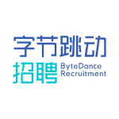

字节跳动 2024 校园招聘 Q&A
2023-08-10 15:01
发表于北京

字节跳动 2024 校园招聘正式启动！

 <<<<<<< HEAD
=======
<<<<<<< HEAD
=======


招聘君为同学们整理了关于简历投递、内推、笔面试以及发展机会等问题的答疑详解，如果你正准备投递，不妨仔细阅读，寻找你要的答案！
Q：字节跳动 2024 校园招聘的时间安排是什么？
A:
投递时间: 8 月 10 日 - 10 月31日
笔试时间: 8月中下旬开始
面试时间: 8月下旬开始
Offer发放时间: 9月上旬开始
Q：字节跳动 2024 校园招聘的招聘对象是？
A：在 2023 年 9 月至 2024 年 8
月期间毕业（中国大陆地区以毕业证为准，非中国大陆地区以学位证为准），且最高学历毕业后无全职工作经验的学生。
*不满足以上毕业时间的同学可以考虑投递社会招聘或实习岗位
Q：招聘对学历和所学专业有限制吗？
A：
我们坚持用人看本质、多元兼容
的
人
才观，不唯背景和资历，欢迎不同背景的优秀人才加入。比起学历和专业，兴趣和能力是否匹配更重要，你可以在具体职位描述中进一步了解详情。
Q：每人可以投递几个职位？
A： 在字节跳动 2024 校园招聘中，每人最多可投递两个职位，每个职位可选择服从调剂的三个城市。如果你投递的职位未被录用，HR
有可能会根据你选择的服从调剂城市，再次邀请你进入校招流程。你的申请职位及招聘进度会随之更新，请留意相关邮件及短信通知。
Q：投递的两个职位之间有什么关系？
A：两个职位彼此独立，我们会默认优先处理较早投递的职位。当然，你可以选择只投递一个职位，或在第一个职位流程结束后再投递第二个职位。但请注意，已成功投递的职位不能修改更换。
Q：如果已经投递了实习（ByteIntern/日常实习）或社招职位，还可以投递校招职位吗？
A：可以。
但是我们会优先处理较早投递的实习或社招职位，如果你投递的实习或社招职位未被录用，HR
有可能
会根据你投递的校招职位再次邀请你进入校招流程。
Q：如何投递简历？
A：
字节跳动校园招聘官网为本次校招简历投递唯一入口，在电脑及手机上均可进行投递。
Q：职位投递成功后，还可以修改投递职位吗？
A：
不可以修改投递职位。
Q：职位投递成功后，还可以修改简历内容吗？
A：如需修改简历内容，请登录字节跳动校园招聘官网,在页面右上角找到「个人中心-我的简历」模块进行修改。但请注意，已投递的职位是无法同步更新展示新简历内容的；在修改简历后新投递的职位，会展示新简历内容。
Q：如何知道我的招聘进展？
A：登录字节跳动校园招聘官网，页面右上角「个人中心-应聘记录」可实时查看招聘进展。同时我们也会通过邮件、短信等方式同步后续安排，请确保投递时填写正确的手机号及邮箱。
Q：如果应聘状态已经停留在某一个阶段很久了（超过 10 个工作日），说明流程已经结束了吗？
A：只有应聘状态显示【流程终止】说明流程结束，其他状态请耐心等待后续通知。
Q：如果应聘状态显示【流程终止】，说明流程已经结束了吗？
A：是的，说明你在当前投递的职位下暂无后续安排。
Q：我是在职实习生，我可以投递校招职位么？
A：在职实习生需要走实习生转正流程，具体可以联系你的 HR 。已离职实习生可以投递校招职位。
Q：之前投递过 2024 校园招聘研发提前批的职位，但没有成功，还能继续投递正式批吗？
A：可以再次投递，提前批的招聘结果不影响正式批投递。
Q：字节跳动 2024 校园招聘可以内推吗？参加内推有什么作用？
A：所有校招职位均可参加内推。若通过内推投递校招职位，简历将获得优先筛选资格。更重要的是，可以通过内推人更深入地了解公司和部门。
Q：怎样参加校招内推？
A：联系字节跳动在职同学获取校招内推链接/内推码（正式员工和实习生都有），点击链接进行投递或在投递页面输入内推码，投递成功即代表内推成功。
Q：我在投递的时候，没有填写内推码或使用内推链接投递，还能再次通过内推投递吗？
A： 投递完成之后不可以再补充内推码或重新通过内推链接投递哦。
Q：我用 A 的内推码完成了投递，同时我又收到了 B 的内推码，我可以修改吗？
A： 投递之后不可以再修改内推码。
Q：我通过内推投递了一个职位，但流程已经被结束，我还可以再次通过内推投递吗？
A：可以，每位同学最多有两次投递机会，可以使用同一个内推码，或分别使用不同的内推码参加内推。
Q：内推需要付费吗？
A：不需要！字节跳动不会以任何形式进行付费内推，也绝不会以任何名义向应聘者收取任何费用，请谨防受骗！ 点击查看《字节跳动求职防骗指南》
Q：所有职位都会安排笔试吗？
A：投递研发类职位（后端、算法、客户端、前端、测试/测开、大数据、研发工程师-质量保障），原则上均会被安排集中在线笔试，其余职位是否有笔试请以实际收到的邮件和短信通知为准。如有疑问，发送详细信息至候选人体验反馈平台candidatefeedback.bytedance.com，会有HR
在五个工作日内回复。
Q：笔试采取什么形式？是什么时候？
A：
笔试采取在线笔试的形式，8月中下旬启动。笔试前 1 - 3
个工作日会发送笔试邀请，请耐心等待邮件和短信通知。笔试根据投递时间顺序先后发放，部分职位的笔试时间或有调整，具体时间以收到的通知为准。
研发类职位（后端、算法、客户端、前端、测试/测开、大数据、研发工程师-质量保障）集中笔试时间见下表：
| 笔试日期 | 北京时间 |
|
8月20日、9月3日
9月17日、10月8日
10月22日、11月2日
|
19：00 - 21：00 |
|
8月27日、9月10日
9月24日、10月15日
|
10：00 - 12：00 |
Q：错过一次笔试，还能再参加笔试吗？
A：建议大家收到笔试通知后，尽量按时参与。如果未及时参加笔试，且投递职位仍有需求，你将有机会参与后续笔试。后续笔试前 1 - 3
个工作日会发送笔试邀请，请耐心等待邮件和短信通知。
*同一个职位，笔试邀请两次均未作答者，将没有机会参与该职位后续笔试
Q：笔试迟到会消耗作答时间吗？
A：是的，迟到将消耗笔试整体作答时间，建议提前上线，准时作答！
Q：笔试之后，为什么应聘状态一直为【笔试中】？
A：我们正在对笔试结果进行评估，请耐心等待笔试结果。
Q：应聘状态为【笔试中】超过一周，但一直没有收到笔试通知怎么办？或者只收到了手机短信，没有收到笔试邀请怎么办？
A：
Step1 查看自己投递简历时填写的邮箱及电话是否有误；
Step2 查看简历投递邮箱的垃圾箱；
Step3 如果确认没有收到笔试通知，可发送详细信息至候选人体验反馈平台
candidatefeedback.bytedance.com ，反馈遇到的问题。
如需反馈问题，请参考以下内容格式：
【招聘流程类型】校园招聘
【反馈内容类型】咨询
【标题】官网状态笔试中，未收到笔试邀请
【内容】至少包含姓名、手机号、投递职位名称、投递邮箱以及可以接收邮件的正确邮箱。
* 应聘状态为【笔试中】不足一周时间，且未收到任何笔试通知，此时 HR 正在安排笔试，请耐心等待笔试通知
Q：我的应聘状态显示【面试中】，但却未收到任何通知，是什么原因？
A：如你已经进入面试中还未收到面试通知，请留意邮件及手机短信，我们会在面试前与你沟通。
Q：应聘状态为【笔试中】超过一周，但一直没有收到笔试通知怎么办？或者只收到了手机短信，没有收到笔试邀请怎么办？
A：请尽量按时参与面试。如果临时有事或因不可抗力无法参加，不要着急，请直接联系面试邀请邮件中的 HR 说明情况，并让 HR
帮忙修改。若因特殊情况无法联系上 HR ，可发送详细信息至候选人体验反馈平台
candidatefeedback.bytedance.com 说明情况，会有 HR 在五个工作日内回复。
如需反馈问题，请参考以下内容格式：
【招聘流程类型】校园招聘
【反馈内容类型】咨询
【标题】调整面试时间
【内容】至少包含姓名、手机号、投递职位名称、需要修改的面试时间和可面试的时间段。
Q：面试后多长时间可以收到结果？
A：登录字节跳动校园招聘官网，页面右上角「个人中心-应聘记录」可实时查看招聘进展。【流程终止】外的其他状态请耐心等待后续通知。
Q：字节跳动是一家怎样的公司？选择加入字节跳动的理由是什么？
A：字节跳动成立于2012年3月，公司使命为“Inspire Creativity, Enrich
Life（激发创造，丰富生活）”。业务覆盖全球150个国家和地区，拥有15万名员工。截至2021年6月，字节跳动旗下产品全球月活跃用户数超过19亿。
公司业务多元，持续创新：字节跳动在全球推出了多款有影响力的产品，包括今日头条、抖音、西瓜视频、飞书、Lark、PICO、剪映、TikTok
等，初入职场，即可进入全球化的业务和团队，探索前沿技术，拓展视野；
在创造和实战中，快速成长：我们将为你提供多维度的项目实战机会，新同学可以在项目规划到落地执行的过程中，用创新的方式做事，收获真本领；
创业氛围浓厚，做事务实：我们保持创业心态，始终像创业第一天那样做事。鼓励务实高效，没有职场形式主义，同事之间像同学一样真诚相处。同时也会尊重每个新人的想法，鼓励尝试，给新人足够的试错空间；
创新方式解决问题，承担社会责任：我们希望做有创造性的工作，从而激发更多人和组织的创造力。同时，公司的平台和产品在不断地创造社会价值，目前已推出抖音寻人、古籍修复、技术公益比赛等实践项目，承担更多社会责任。
Q：字节跳动有哪些新员工培训计划？
A：字节跳动内部学习氛围浓厚，我们十分关注员工成长，为员工提供阶段性的培训项目和开放的学习资源。
新员工入职课程，快速融入公司。入职2周内，新员工必修课程为你开启职场第一课；通过学习，你可以全面了解公司文化、政策、办公系统等，快速融入公司。
技术新人训练营，开拓技术视野。入职2个月内，技术新人培训项目如约而至；通过星火计划、Bootcamp
训练营等，你可以和技术大牛零距离交流，全面了解字节跳动技术全景，快速提升专业技能。
一对一 Mentor 机制，体验定制化成长。入职6个月内，Mentor
1对1指导，为你制定专属成长计划、明晰发展路径；Mentor 将帮助你更好地熟悉业务、融入团队，从校招小白快速成长为独当一面的职场人。
开放的学习资源和平台，持续积累持续提升。知识库沉淀丰富的内部优秀实践；ByteTalk
定期开放，带你探索行业前沿资讯；ByteLearning 提供丰富的学习资源，随时在线学习，了解不同领域知识，提升专业能力。
如果以上问题都没有解答你的疑惑，可发送详细信息至候选人体验反馈平台
candidatefeedback.bytedance.com 说明情况，我们会在 5 个工作日内回复。
戳下方名片，关注【字节跳动招聘】微信公众号

>>>>>>> d2ca6fd0ec3ee3b98f82cd0cb8e2ff92a1733fb1
第一时间获取最新校招动态

字节跳动招聘
字节跳动成立于2012年3月，推出了今日头条、抖音、西瓜视频、飞书等多款产品。业务覆盖150个国家和地区，旗下产品全球月活用户数超19亿。加入我们，和优秀的人，做有挑战的事！
82篇原创内容
公众号